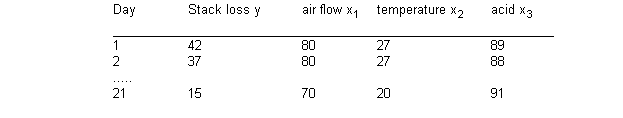

![[stacks0]](stacks0.bmp) Stacks: robust regression
Stacks: robust regression
Birkes and Dodge (1993) apply different regression models to the much-analysed stack-loss data of Brownlee (1965). This features 21 daily responses of stack loss y, the amount of ammonia escaping, with covariates being air flow x 1 , temperature x 2 and acid concentration x 3 . Part of the data is shown below.

We first assume a linear regression on the expectation of y, with a variety of different error structures. Specifically
m i = b 0 + b 1 z 1i + b 2 z 2i + b 3 z 3i
y i ~ Normal( m i , t )
y i ~ Double exp( m i , t )
y i ~ t( m i , t , d)
where z ij = (x ij - xbar j ) /sd(x j ) are covariates standardised to have zero mean and unit variance. b 1 , b 2 , b 3 are initially given independent "noninformative" priors.
Maximum likelihood estimates for the double expontential (Laplace) distribution are essentially equivalent to minimising the sum of absolute deviations (LAD), while the other options are alternative heavy-tailed distributions. A t on 4 degrees of freedom has been chosen, although with more data it would be possible to allow this parameter also to be unknown.
We also consider the use of 'ridge regression', intended to avoid the instability due to correlated covariates. This has been shown Lindley and Smith (1972) to be equivalent to assuming the regression coefficients of the standardised covariates to be exchangeable, so that
b j ~ Normal(0, f ), j = 1, 2, 3.
In the following example we extend the work of Birkes and Dodge (1993) by applying this ridge technique to each of the possible error distributions.
Birkes and Dodge (1993) suggest investigating outliers by examining residuals y i - m i greater than 2.5 standard deviations. We can calculate standardised residuals for each of these distributions, and create a variable outlier[i] taking on the value 1 whenever this condition is fulfilled. Mean values of outlier[i] then show the confidence with which this definition of outlier is fulfilled.
The BUGS language for all the models is shown below, with all models except the normal linear regression commented out:
model
{
# Standardise x's and coefficients
for (j in 1 : p) {
b[j] <- beta[j] / sd(x[ , j ])
for (i in 1 : N) {
z[i, j] <- (x[i, j] - mean(x[, j])) / sd(x[ , j])
}
}
b0 <- beta0 - b[1] * mean(x[, 1]) - b[2] * mean(x[, 2]) - b[3] * mean(x[, 3])
# Model
d <- 4; # degrees of freedom for t
for (i in 1 : N) {
Y[i] ~ dnorm(mu[i], tau)
# Y[i] ~ ddexp(mu[i], tau)
# Y[i] ~ dt(mu[i], tau, d)
mu[i] <- beta0 + beta[1] * z[i, 1] + beta[2] * z[i, 2] + beta[3] * z[i, 3]
stres[i] <- (Y[i] - mu[i]) / sigma
outlier[i] <- step(stres[i] - 2.5) + step(-(stres[i] + 2.5) )
}
# Priors
beta0 ~ dnorm(0, 0.00001)
for (j in 1 : p) {
beta[j] ~ dnorm(0, 0.00001) # coeffs independent
# beta[j] ~ dnorm(0, phi) # coeffs exchangeable (ridge regression)
}
tau ~ dgamma(1.0E-3, 1.0E-3)
phi ~ dgamma(1.0E-2,1.0E-2)
# standard deviation of error distribution
sigma <- sqrt(1 / tau) # normal errors
# sigma <- sqrt(2) / tau # double exponential errors
# sigma <- sqrt(d / (tau * (d - 2))); # t errors on d degrees of freedom
}
Data ( click to open )
Inits for chain 1 Inits for chain 2 ( click to open )
Results
a) Normal error
A 1000 update burn in followed by a further 10000 updates gave the parameter estimates
![[stacks4]](stacks4.bmp)